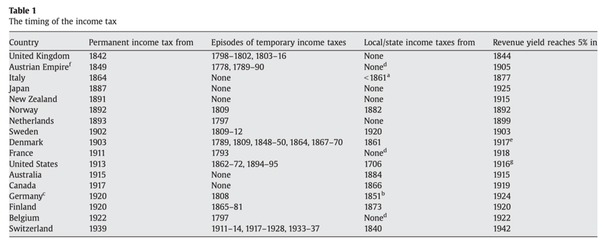

收录于合集
#国家建构与国家发展 70 个
#比较政治学 121 个
对于前现代国家而言，军事是财政支出最为主要的方向，直到亨利八世统治时期（1509年-1547年），英国人民也只是希望国王们靠自己的财产生活，税收只能用于战争；而现代国家是真正的利维坦，不论是社会生活还是经济生产，国家几乎都处在中心位置。除军事外，教育、医疗、基础设施建设都倚赖国家财政的支持。这种角色的转变离不开所得税（income tax）的引入。所得税可以说是近200年来财税体系最重要的创新之一，其建立大大拓展了国家的税基。到今天，所得税已经成为了西方国家中最为重要的税种，其税额往往占到财政收入的五成以上。与其他税种相比，所得税的征收成本更高、难度更大，征收所得税不仅需要得力的行政部门，更要求公民、尤其是高收入者的配合。 但是作为社会精英的主要组成部分，高收入者为何要将自己的收入置于严密的政治监控之中？
“大炮一响，黄金万两”
在当代政治学中，“战争制造国家，国家发动战争”可能是最为经典的论断之一。战争被认为是西欧现代国家形成的主要驱动力，而以所得税为标志性成果的现代财税体制也被认为是战争压力下的产物。火药的诞生使得手持火枪的步兵成为了战争的主力，战争的胜负不再由少量被坚执锐的重骑兵所决定。这使得战争的规模和残酷性呈指数级别上升。15世纪法国的军队规模约为2万人；到了18世纪初，仅和平时期的军队规模就高达14万人；路易十四时期法国战时军队达到过40万人，而19世纪初拿破仑远征俄国时的军队规模达到了60万之众。
军事- 财政理论认为，战争规模的扩大给欧洲各国带来了强大的财政压力，推动了财税体制的改革，其中就包括所得税的引入。一方面，备战、维持更高规模的常备军、承受更高烈度的人力物力损失都需要强大的财税基础。所得税因其极高的汲取潜力往往在此时得到统治集团的青睐。另一方面，战争给欧洲政治体带来的是生死存亡的压力，高收入的精英更有可能为国家财税能力的强化而做出一定的让步。下表展示了各国最初设立所得税的时间。所得税首次在奥地利、英国等国家亮相的时机恰好是法国大革命战争时期，其他欧洲国家确立所得税的时机也往往和战争相关。

该表截取自：Adit & Jesen(2009)
军事-财政理论建构了战争-财政压力- 所得税创建的解释链条，但这种解释仍然主要是粗线条的。例如同为西欧欧洲早期现代国家的典范，且都在18世纪末的战争中临时征收过所得税，但是英国是最早确立所得税法定地位的国家，法国却直到一战前夕才正式引入所得税。此外，从财政压力到所得税的建立，其逻辑链条仍然不够完善。事实上，在所得税引入之前，英国的人均纳税额就从1688年的2.07克黄金增加到了1788年的12.87克黄金。
“无代表，不纳税”
“无代表，不纳税”最早是美国独立战争中反抗英国殖民者的口号。这一呼吁将纳税与政治参与直接相关。这一口号不仅鼓舞了美洲的自由战士，更反应了当时的政治原则。西方各国引入所得税的时间段恰好也是选举制度逐渐铺开的时间段。选举制度的建立，意味着政治参与的扩大，尤其是中产阶级的政治参与权的扩张。所得税也是各类税种中税感最明显的，人们可以明确的察觉到自己的收入有多少转化为了国家的财政收入。这种税感很容易就转换为对政治参与、政治权利的呼吁。反过来说，如果没有一定的政治参与权和能够代表自己切身利益的政治代表，那么所得税的引入也是不可想象的。
前现代国家更加依赖的人头税，其性质是累退的，不论贫富纳税额相同就意味着收入越低税收负担越重；而所得税的性质是累进的，即便税率固定，富人也要承担更多的税额，更不用说所得税在后面的发展中还出现了起征点、累进税率等措施。这也就是说，所得税能起到社会再分配、维护公平正义的作用。因此在选举制引入后，所得税更容易得到大众支持并成为政府法律。因而有学者的研究也指出，秘密投票制度、选举权的扩大等完善选举制度的手段都促进了所得税的确立；劳工运动、左翼政党等主要代表大众利益的政治团体也在这一进程中发挥了关键作用。
纳税少，无代表
也有学者通过对历史发展的考察指出：所得税的确立反而是由于选举制度的不完善，而不是由于选举权的扩大。虽然西方国家早在18世纪就出现了基于选举的代议制，但是选举权的扩张却是相当晚近的事情。欧洲最早赋予人民普选权的国家是芬兰，这已经是1906年的事了，而美国直到1965年才真正实现了普选权。
在普选权实现之前，纳税额恰恰是获得普选权利的门票，纳税额度低于一定值的公民，选举权利很有限甚至根本无法参与选举。与其他直接税相比，所得税能够清楚的区分开富人和穷人群体，并由此实现对劳苦大众政治权利的限制。例如，普鲁士在一战前实行的是三级投票制度。在这一投票制度下，虽然每个超过24岁的男性都有选举权，但土地精英和富人对选举结果拥有不成比例的影响力。选民依据其缴纳税收的额度被分为三个等级。缴纳税收最多的第一等级包含3.6%的选民，第二等级包含10.8%的选民，纳税最少的第三等级涵盖了85.6%的选民。但三个等级能够选出的选举人数是相等的。在19世纪的欧洲国家，纳税少的公民可能根本就没有自己的政治代表。 高收入者通过税收-投票联系体系(vote-tax link)保障了自己在国家政治决策体制中的高影响力，避免了由于选举权利的扩大带来更为激进的再分配要求。 因此高收入者会支持所得税的确立，以保障自己超高的政治影响力。这一观点似乎有点反直觉，但近来已经有研究从实证层面对其进行了验证。所得税的确立不仅普遍在选举权扩张之前，而且选举权利和选举制度与所得税的设立也在统计上呈现出负相关关系。作为比较，早在1792年就实现男性普选权的法国，设立所得税的提案在19世纪反复讨论却始终难以通过，直到1911年才正式确立。
老贵族与暴发户
有学者从所得税起确立时的阶层权力结构入手，他们指出：所得税的确立实际上也是不同精英阶层之间斗争的结果。Isabela Mares和Didac Queralt的研究发现，引入所得税时，各国统治精英集团仍然是土地精英。与传统的土地税、财产税相比，所得税将税基扩展至工业部门。与土地贵族相比，这些依靠工商业起家的新精英不过是政治上弱势的暴发户。但这些新精英的财富却在很大程度上被传统的财税体制所忽略了。1842年英国确立的收入税体制并没有对资本收益和出租收益征税，这两项都是地主的收入来源，但是对贸易收入征了税，这正是指向工业精英。此外，土地精英也期望所得税的引入能够减轻对其他资产的税收，尤其是对土地税收的减免。同样是德意志诸侯，在土地精英权势较大的普鲁士，其所得税主要涉及流动资本所有者(mobile capitial owner)；而在巴登这样土地精英势力较弱的邦国，所得税既面向流动资本也面向土地。
Beramendi等人同样认为诸如所得税的确立是精英竞争的产物，但他们的理论逻辑有所不同。他们认为农业精英不愿意支持发展财税能力的决策。而资本主义精英能够受惠于国家对公共物品的投资，因此更加支持国家对于财税能力的发展。但是在农业精英掌握政治权力的情况下，对不动产增税几乎是不可能的，提高消费税在当时的技术条件下也不可行，而提高关税则会阻碍国际贸易的发展，因此资本主义经营可能也会支持对于所得税的征收。尽管这意味着资本主义精英要承担更多的税负，但他们能从国家对公共物品的投资中得到更多的回报。
值得一提的是，这两种理论逻辑都在经验层面得到了验证。
结语
与西方国家相比，我国在财税上不依赖所得税这种税感极强的直接税。但在社会上，对个人所得税的讨论往往总是能吸引广泛的关注。与之类似的还有房产税。
进步的财税体制应该是累进的，应向高收入者汲取更多的税额。在何种情况下高收入者会将自己的收入置于政府监控之下并允许政府合法地从中汲取财政收入呢？伴随着财税体制的改革，这一讨论永远都不会停止，对这一问题的解答也将会更加多样、更加情境化。
参考文献
[1] Aidt, T. S., & Jensen, P. S. (2009). The taxman tools up: An event history study of the introduction of the personal income tax. Journal of Public Economics , 93(1-2), 160-175.
[2] Aidt, T. S., & Jensen, P. S. (2009). Tax structure, size of government, and the extension of the voting franchise in Western Europe, 1860–1938. International Tax and Public Finance , 16(3), 362-394.
[3] Beramendi, P., Dincecco, M., & Rogers, M. (2019). Intra-elite competition and long-run fiscal development. The Journal of Politics , 81(1), 49-65.
[4] Mares,I., & Queralt, D. (2015). The non-democratic origins of income taxation. Comparative Political Studies , 48(14), 1974-2009.
[5] Saylor, R., & Wheeler, N. C. (2017). Paying for War and Building States: The Coalitional Politics of Debt Servicing and Tax Institutions. World Politics , 69(2), 366-408.
[6] Scheve, K., & Stasavage, D. (2010). The conscription of wealth: mass warfare and the demand for progressive taxation. International organization , 529-561.
作者：赵德昊 审校：杨端程 编辑：蒋晟